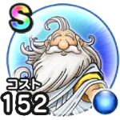

かみさま
ドラクエ7ReWALKこころ最大コスト+4スキルの斬撃・体技ダメージ+7%全属性ダメージ+7%休み耐性+7%ターン開始時HPを15回復する / 9.0点
くわしい特徴
【ランク特殊効果】 こころ最大コスト+4スキルの斬撃・体技・ブレスダメージ+7%全属性ダメージ+17%????系へのダメージ+5%休み耐性+10%ターン開始時HPを77回復するこころ最大コスト+4スキルの斬撃・体技ダメージ+7%全属性ダメージ+7%休み耐性+7%ターン開始時HPを15回復する

ドラクエ7ReWALKこころ最大コスト+4スキルの斬撃・体技ダメージ+7%全属性ダメージ+7%休み耐性+7%ターン開始時HPを15回復する / 9.0点
【ランク特殊効果】 こころ最大コスト+4スキルの斬撃・体技・ブレスダメージ+7%全属性ダメージ+17%????系へのダメージ+5%休み耐性+10%ターン開始時HPを77回復するこころ最大コスト+4スキルの斬撃・体技ダメージ+7%全属性ダメージ+7%休み耐性+7%ターン開始時HPを15回復する